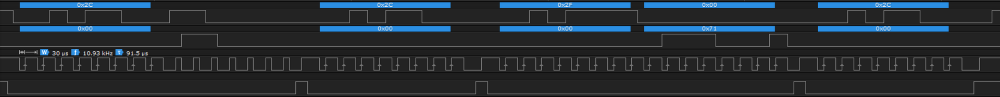

The following section contains troubleshooting guidance for the most common issues. Please also refer to the HAL Self Test module that runs a few test cases in order to verify the HAL, e.g. after porting the API to a new platform.
Device Initialization Yields Device Not Connected (Error Code -101)
Problem: After calling the Argus_Init() method, an error status -101 (ERROR_ARGUS_NOT_CONNECTED) is returned.
Information: The first thing that happens in the initialization function are a few read/write cycles on the SPI interface in order to check the responsiveness of the device:
- First, a byte sequence (1,2,3,4,...,16) is written to the MOSI and the MISO data is ignored.
- Second, a sequence of 0's is written to the same register and the MISO is captured and compared to the pattern from the previous write cycle.
- Finally, another sequence of 0's is written and the received data is checked for being zero again.
If the read pattern is not equal to the written one, the error ERROR_ARGUS_NOT_CONNECTED is returned and the initialization process is canceled.
Solution: In order to solve the issue, verify the following sequence in your SPI interface when calling the Argus_Init() function:
- Writing a test pattern to register address 0x04:
- MOSI:
0x 04 01 02 03 04 05 06 07 08 09 0A 0B 0C 0D 0E 0F 10
- MISO:
0x 00 00 00 00 00 00 00 00 00 00 00 00 00 00 00 00 00 (or any other, depending on the current state of your device)
- Clearing the test pattern at register 0x04, read back of test pattern 1:
- MOSI:
0x 04 00 00 00 00 00 00 00 00 00 00 00 00 00 00 00 00
- MISO:
0x 00 01 02 03 04 05 06 07 08 09 0A 0B 0C 0D 0E 0F 10
- Clearing the test pattern at register 0x04, read back of test pattern 2:
- MOSI:
0x 04 00 00 00 00 00 00 00 00 00 00 00 00 00 00 00 00
- MISO:
0x 00 00 00 00 00 00 00 00 00 00 00 00 00 00 00 00 00
If the above pattern is not present, double check the following:
- Verify the physical connections of all 4 SPI pins: MOSI, MISO, CS and CLK.
- Verify the correct implementation of the S2PI_TransferFrame method and all its requirements (e.g. any required initialization code is properly called prior to Argus_Init).
- Further check if the
spi_slave parameter in the Argus_Init function is correct and not 0! Passing 0 is reserved for error handling!
Decreased Device Performance or Accuracy
Problem: The measurement data is not very accurate, the performance is bad and the sensor seems to be uncalibrated.
Information: Each sensor is factory calibrated and comes with its individual set of calibration data stored in a small EEPROM on the ASIC. If EEPROM readout fails, the sensor remains uncalibrated and measurement results are no good. Furthermore, the module and laser type cannot be identified and this the device operates in a low output power mode in order to stay eye safe yielding bad performance.
Solution Verify the EEPROM readout is working. Refer to the EEPROM section for details.
EEPROM Readout Fails (Error Code -109)
Problem: The EEPROM readout does not work correctly and the Argus_Init return with error code -109 (ERROR_ARGUS_EEPROM_FAILURE). The device does not operate with expected performance and accuracy.
Failure Modes: In case of EEPROM readout issues, the following failure modes are possible and need to be verified:
- GPIO output does not work.
- GPIO input does not work.
- GPIO signals are inverted.
- GPIO direction (input/output) is not correct.
- GPIO timing is too fast.
1. How to Verify EEPROM Readout Sequence
If EEPROM readout fails, verify the readout sequence by executing the following steps:
- Set Breakpoints at the start of S2PI_CaptureGpioControl and at the end of S2PI_ReleaseGpioControl functions respectively.
- Run your code with Argus_Init and wait until the breakpoint within S2PI_CaptureGpioControl hits and the program execution stops.
- Start recording the SPI signals and pins MOSI, MISO, CLK and CS with a Logic Analyzer or an Oscilloscope.
- Stop the recording when the program execution stops at the breakpoint within S2PI_ReleaseGpioControl.
- Verify the captured sequence and compare it to the following screenshot:

EEPROM Readout Sequence (Signals from top to bottom: MOSI, MISO, CLK, CS).
Things to verify:
- Check if output (CS, MOSI, CLK) pins are toggling. If no signal changes, check the implementation of your S2PI_WriteGpioPin function. Also verify the output signals are at 3.3 V level.
- Check if CLK toggles at approx. 10 to 100 kHz or slower. Add a delay (e.g. 10µsec) in the S2PI_WriteGpioPin function to limit GPIO toggling speed.
Additional Info: Here is some additional info about the EEPROM protocol to better understand and verify what's going on: Whenever the CS is cleared to low, the transfer always begins with an standard 8-bit SPI sequence. Some transfers include a 7-bit EEPROM read command plus address or an 8-bit EEPROM data byte. In detail, the following transfers are happening per readout sequence:
- The first transfer is a SPI write of byte 0x2C followed by a 7-bit EEPROM read command plus address. The EEPROM data on the MOSI is echoed one bit later at the MISO line.
- The next transfer is simply a 8-bit SPI transfer of byte 0x2C.
- The third transfer is the read access. 0x2F SPI write followed by a 8-bit EEPROM read sequence. The EEPROM bits are transferred via the MISO line.
- Finally, the sequence is closed with a 0x2C SPI write access.
2. Further Tests on EEPROM Readout Sequence
If the EEPROM sequence is verified as described above, apply these additional tests to eliminate the remaining failure modes:
- Test if the GPIO input value is correctly read within the S2PI_ReadGpioPin function. Use a debugger breakpoint within S2PI_ReadGpioPin to stop the program execution and verify that the current input voltage (determined by multimeter or oscilloscope) yields the correct return value.
- Double check if a low voltage (0V, GND) level yield 0 and a high voltage (3V3, VCC) level yield 1 respectively.
- Repeat the test until at least a single low and high state has been tested.
- Also make sure the voltage level is at 3.3 V.
- Double check input/output GPIO direction configuration:
- Output Pins: CLK, CS, MOSI
- Input Pins: MISO, IRQ
- Measure the GPIO toggle speed of the CLK pin with an oscilloscope. Add a delay in the S2PI_WriteGpioPin function to limit GPIO toggling speed to around 10µsec.
The Measurement Never Finishes or Yields Timeout Error (-6)
Problem: After starting a measurement,via Argus_TriggerMeasurement or Argus_StartMeasurementTimer, the callback is never invoked or the passed callback status is -6 (Timeout).
Information: After starting a measurement or integration cycle on the device, the API waits until a callback is invoked via a GPIO interrupt. Usually the interrupt implementation is invalid when facing the above problem.
The Measurement Finished Callback is Never Invoked
When the measurement ready callback is never invoked and no timeout error occurs, the device interrupt is pending and the S2PI_ReadIrqPin function correctly determines the low state of the interrupt pin. However, the interrupt service routine is not invoked or does not call the required callback into the API.
Solution: Double check the IRQ implementation:
- Check if the interrupt invokes the interrupt service routine on a falling edge.
- Check if the interrupt service routine calls the previously set callback into the API. The callback is passed upon initialization (Argus_Init) via the S2PI_SetIrqCallback function.
- Check if the interrupt priorities are set correctly. Refer to the Porting Guide for further information.
The Measurement Finished Callback Yield a Timeout Error (Error Code -6)
When the measurement ready callback is invoked but passes a timeout error (-6) via the status parameter, the device interrupt is not detected at all. This may stem from invalid SPI transfers (i.e. device configuration already fails) or invalid IRQ implementation. Since the Argus_Init function already passes with status OK, the SPI communication should be valid.
Solution: Double check the IRQ implementation:
- Check if the interrupt line is pulled to low after starting the measurements (e.g. via Argus_TriggerMeasurement). If this is not the case, double check the physical connection and SPI communication.
- Check if the S2PI_ReadIrqPin reads the IRQ line state correctly (low level (0V) yields 0, high level (3.3V) yields 1)
- Check if the interrupt invokes the interrupt service routine on a falling edge.
- Check if the interrupt service routine calls the previously set callback into the API. The callback is passed upon initialization (Argus_Init) via the S2PI_SetIrqCallback function.
- Check if the interrupt priorities are set correctly. Refer to the Porting Guide for further information.